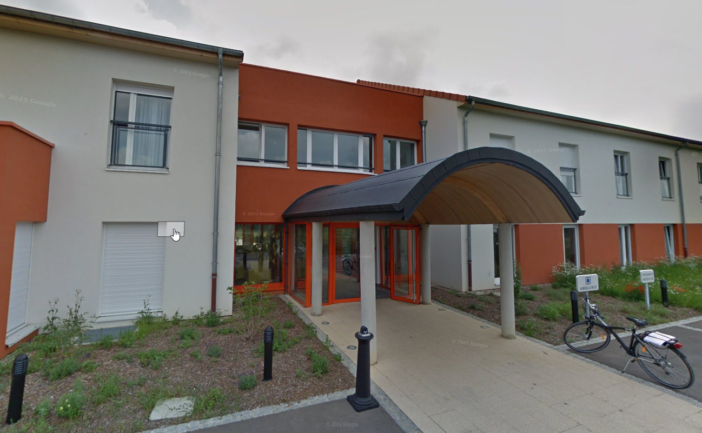

Durant un été, j'ai consacré mon temps à travailler au sein de l'EHPAD Saint Elisabeth, niché à Basse-Ham. Ce job d'été a été une expérience humaine profonde où j'ai assumé diverses tâches, allant du ménage méticuleux des espaces communs à l'attention bienveillante portée aux résidents. Cette expérience m'a permis de développer des compétences polyvalentes tout en forgeant des liens significatifs avec les personnes que je servais au quotidien.

Pendant mes missions de travail de nuit à l'EHPAD Saint Elisabeth, ma responsabilité principale était de veiller sur le bien-être des résidents. Cette période nécessitait une présence attentive, impliquant des rondes régulières pour m'assurer que chacun se sentait en sécurité et à l'aise. Outre l'aspect physique du travail, cette expérience m'a inculqué la compassion et la patience nécessaires pour répondre aux besoins spécifiques de ceux qui dépendent de soins nocturnes.